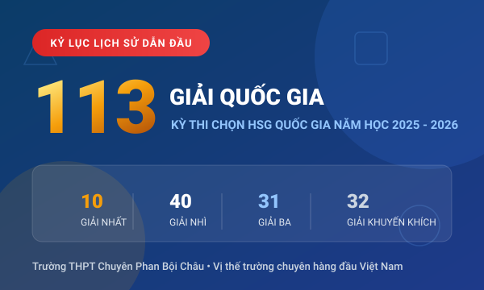

Thành tích 21/09/2026
Kỷ lục lịch sử: 113 học sinh Chuyên Phan Bội Châu đạt giải Học sinh giỏi Quốc gia, giữ vững vị thế Top 1 cả nước
Xác lập kỷ lục vô tiền khoáng hậu với 113 giải (10 giải Nhất, 40 giải Nhì, 31 giải Ba). Đặc biệt, lớp 12C5 lập kỳ tích có tới 3 nam sinh cùng giành giải Nhất môn Tiếng Anh: Trần Nhật Nam, Nguyễn Quang Minh và Nguyễn Phước Hải Khánh. Môn Toán có 2 giải Nhất thuộc về Nguyễn Hoàng Phương (11A1) và Lưu Trọng Phúc...
Xem chi tiết bài viết →